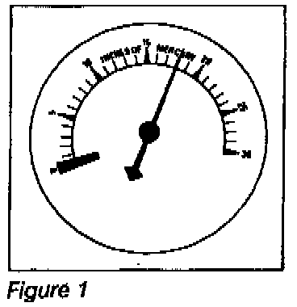
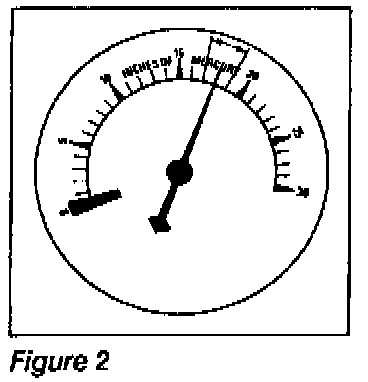
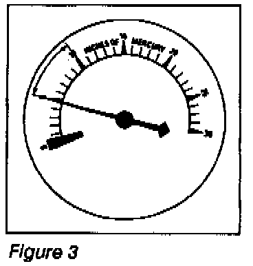
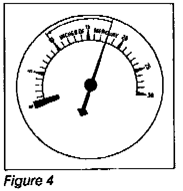

A/T - Engine Vacuum Testing
BULLETIN: # 028DATE: October 1990
SUBJECT: Engine Testing With A Vacuum Gauge
TRANSMISSION: All
Engine Testing With A Vacuum Gauge
ENGINE/TRANSMISSION RELATIONS
An important part of transmission diagnosis is to make certain the engine operates properly. If the engine performance is incorrect, the transmission will receive the wrong information.
The engine sends signals to the transmission through a vacuum line, throttle cable or both. These signals basically synchronize torque with transmission line pressure, shift feel and shift timing.
Malfunctions in items like the air filter, spark plugs, EGR valves and other parts of the fuel, electrical and emission systems could result in improper transmission performance.
VACUUM GAUGE ENGINE PERFORMANCE TESTING
A vacuum gauge shows the difference between outside atmospheric pressure and the amount of vacuum present in the intake manifold.
The pistons in the engine serve as suction pumps and the amount of vacuum they create is affected by the related actions of:
^ Piston rings
^ Valves
^ Ignition system
^ Fuel control system
^ Other parts affecting the combustion process (emission devices, etc.).
Each has a characteristic effect on vacuum and you judge their performance by watching variations from normal.
It is important to judge engine performance by the general location and action of the needle on a vacuum gauge, rather than just by a vacuum reading. Gauge readings which may be found are as follows:
NORMAL ENGINE OPERATION

At idling speed, an engine at sea level should show a steady vacuum reading between 14" and 22" HG. A quick opening and closing of the throttle should cause vacuum to drop below 5" then rebound to 23" or more. See figure 1.
GENERAL IGNITION TROUBLES OR STICKING VALVES

With the engine idling, continued fluctuation of 1 to 2 inches may indicate an ignition problem. Check the spark plugs, spark plug gap, primary ignition circuit, high tension cables, distributor cap or ignition coil. Fluctuations of 3 to 4 inches may be sticking valves. See figure 2.
INTAKE SYSTEM LEAKAGE, VALVE TIMING, OR LOW COMPRESSION

A vacuum reading at idle much lower than normal can indicate leakage through intake manifold gaskets, manifold-to-carburetor gaskets, vacuum brakes or the vacuum modulator. Low readings could also be very late valve timing or worn piston rings. See figure 3.
EXHAUST BACK PRESSURE
Starting with the engine at idle, slowly increase engine speed to 3000 RPM, engine vacuum should be equal to or higher than idle vacuum at 3000 RPM.
If vacuum decreases at higher engine RPM's, an excessive exhaust back pressure is probably present.
CYLINDER HEAD GASKET LEAKAGE

With the engine Idling, the vacuum gauge pointer will drop sharply, every time the leak occurs. The drop will be from the steady reading shown by the pointer to a reading of 10" to 12" Hg or less. If the leak Is between two cylinders, the drop will be much greater. You can determine the location of the leak by compression tests. See figure 4.
FUEL CONTROL SYSTEM TROUBLES
All other systems in an engine must be functioning properly before you check the fuel control system as a cause for poor engine performance. If the pointer has a slow floating motion of 4 to 5 inches - you should check the fuel control.
BULLETIN RECAP
^ Engine problems can affect transmission performance.
^ If you suspect an engine problem, connect a vacuum gauge to the intake manifold.
^ Note the location and action of the vacuum gauge needle.
^ Use the information in the bulletin to determine the engine problem.
^ Correct the engine problem before doing extensive calibration work on the transmission.